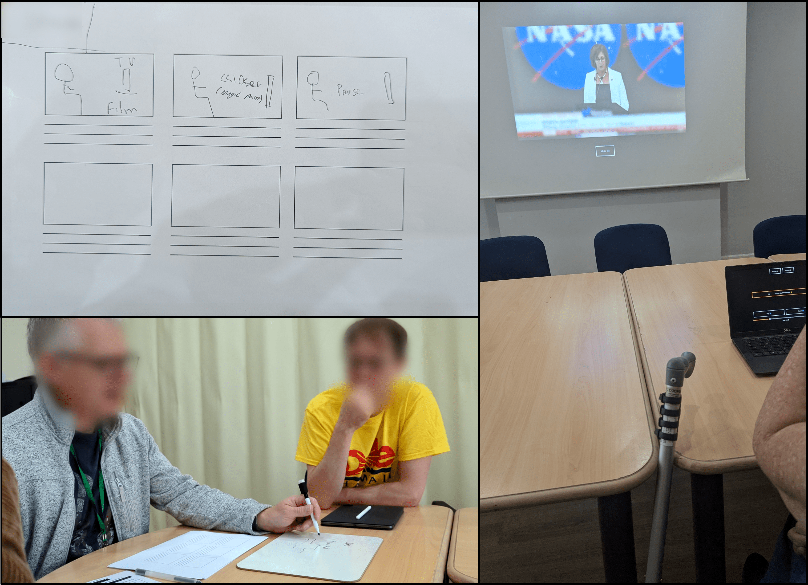
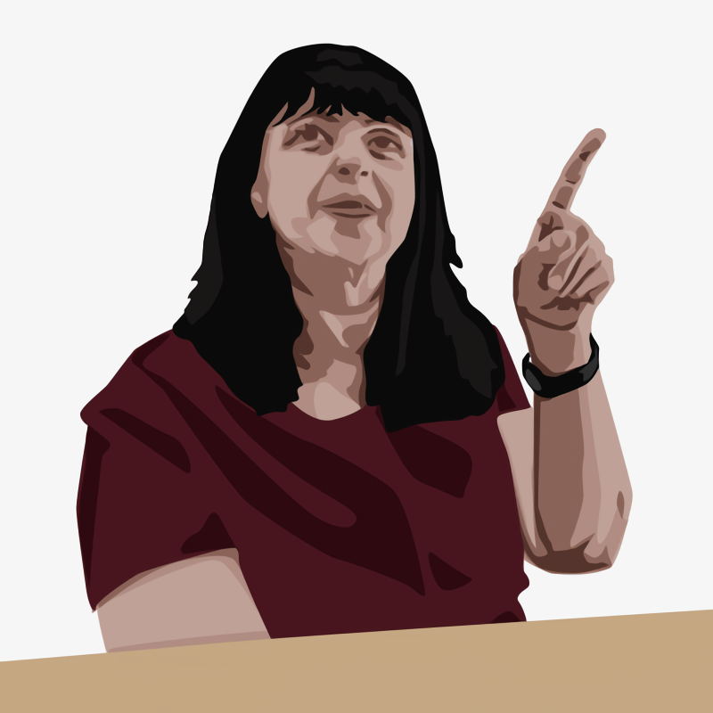
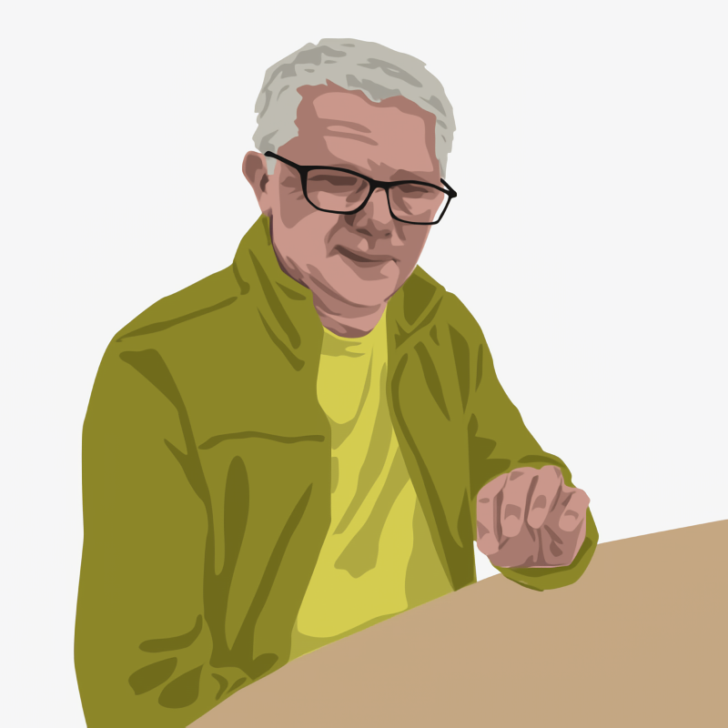
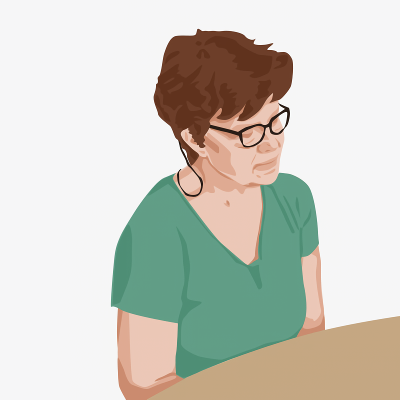
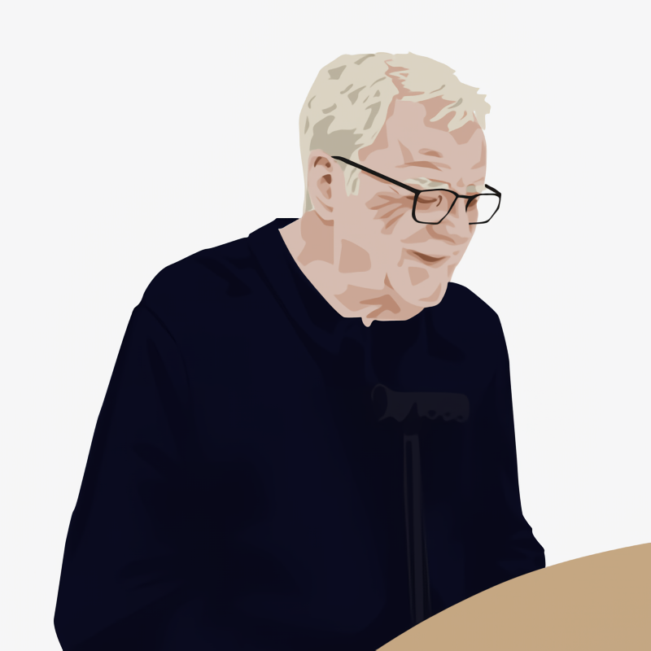
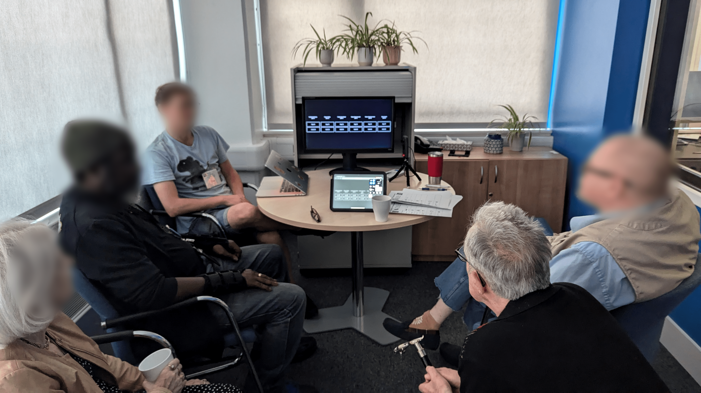

To Each Their Own: Exploring Highly Personalised Audiovisual Media Accessibility Interventions with People with Aphasia
Authors
- Alexandre Nevsky, King’s College London, London, UK. alexandre.nevsky@kcl.ac.uk
- Filip Bircanin, King’s College London, London, UK. filip.bircanin@kcl.ac.uk
- Madeline Cruice, City St. George’s, University of London, London, UK. m.cruice@city.ac.uk
- Elena Simperl, King’s College London, London, UK. elena.simperl@kcl.ac.uk
- Timothy Neate, King’s College London, London, UK. timothy.neate@kcl.ac.uk
Designing Interactive Systems Conference (DIS ’25), July 5–9, 2025, Funchal, Portugal
Abstract
Digital audiovisual media (e.g., TV, streamed video) is an essential aspect of our modern lives, yet it lacks accessibility – people living with disabilities can experience significant barriers. While accessibility interventions can improve the access to audiovisual media, people living with complex communication needs have been under-represented in research and are potentially left behind. Future visions of accessible digital audiovisual media posit highly personalised content that meets complex accessibility needs. We explore the impact of such a future by conducting bespoke co-design sessions with people with aphasia – a language impairment common post-stroke – creating four highly personal accessibility interventions that leverage audiovisual media personalisation. We then trialled these prototypes with 11 users with aphasia; examining the effects on shared social experiences, creative intent, interaction complexity, and feasibility for content producers. We conclude by critically reflecting on future implementations, raising open questions and suggesting future research directions.
CCS Concepts
Human-centered computing: Accessibility theory, concepts and paradigms
Keywords
- Accessibility
- audiovisual media
- video
- bespoke
- co-design
- aphasia
Introduction
The accessibility of audiovisual media for people living with disabilities has received significant attention from researchers – having access to audiovisual media is essential to participate and interact with the world around us [23, 51, 62]. Audiovisual media is inherently complex, combining multiple information modalities over time. This multimodality introduces additional cognitive [81] and language [10] barriers that cannot be addressed through translating information from one mode to another. These barriers can affect many people living with complex communication needs (CCNs), such as aphasia – a language impairment following a brain injury (e.g., stroke) that can affect multiple aspects of communication and audiovisual media viewing. Technologists have developed a wide range of accessibility interventions for a diverse range of communities, such as subtitles for people who are d/Deaf or hard-of-hearing [9, 43, 53, 76] or audio descriptions for blind or visually impaired people [26, 36, 65, 93]. The reliance on language of many widely explored interventions, such as subtitles or audio description, makes them unsuited for these communities, with existing research on alternative interventions being significantly under-explored [61].
Prior work by [59] explored the co-design and creation of accessibility interventions for audiovisual media for people with aphasia, focusing on manipulating various audiovisual elements rather than translating between modalities. This research offered general insights into personalising audiovisual content – allowing the viewer to adapt the content to meet their needs – but did not explore the wide-ranging possibilities afforded by personalisation and how those possibilities cater to a diverse community like people living with aphasia. By co-designing for a population, we miss the core goal of personalisation – the ability to support every individual, no matter how complex their needs or the lack of scalability.
To this end, we take personalisation to its logical next step – creating bespoke interventions for a single individual that address their specific access needs. We ran two co-design sessions with 4 participants living with aphasia, envisioning their ideal personal accessibility interventions, and creating mid-fidelity prototypes for each person. These interventions allow the viewer to alter various viewing aspects, such as audio and visual distractions, the content’s pace, or the subtitles. We then ran three evaluation sessions with 11 participants with aphasia to understand whether the interventions created through bespoke co-design process are transferable to others, as well to evaluate the specific ideas. We explore how such interventions afford the viewer agency and the ability to become an active participant in the viewing experience. We also address some of the underlying tensions that are inherent to audiovisual media personalisation, including the social, creative, interactive, and production costs. Our main contributions are:
- The first empirical insights into the lived experiences of people with aphasia using bespoke accessibility interventions that leverage audiovisual personalisation.
- The demonstration of distinct challenges and trade-offs with highly personalisable audiovisual experiences with people living with aphasia.
- Critical reflections on the socio-political and technical contexts of implementing highly personalisable bespoke accessibility interventions, their technical realities, and design ideals for possible technical futures.
Related Work
Audiovisual Media Access
Audiovisual media is inherently complex – it simultaneously includes both visual and auditory information which introduces accessibility barriers for anyone who cannot interact with those modalities, such as people who are d/Deaf or hard of hearing (DHH) [43] or blind or visually impaired (BVI) [34]. Additionally, the combination of the two information streams over time can introduce further cognitive or language barriers [81], such as those experienced by viewers living with dementia [22]. Audiovisual media also contains narrative information that often relies on language, which introduces barriers for people with language disorders, such as people with progressive language impairments [10]. These accessibility barriers mean many people living with disabilities can have limited engagement with audiovisual media, which is becoming more ubiquitous to connect with the world around us [62].
Given the importance of audiovisual media and its inaccessibility by many communities living with disabilities, researchers and professionals have developed accessibility interventions to support viewing. These include technologies such as subtitles [9, 42], developed for the DHH community, and audio descriptions [65], developed for the BVI community. While initially developed and becoming the standard interventions for television viewing [72], these have been implemented in other viewing contexts, including on smartphones [93], and, more recently, with emerging mixed, augmented and virtual reality devices [76]. These interventions have also been adapted to meet the requirements of new forms of content, such as short-form social media video [53], or online live-streaming [40]. Additional features have been added to improve the interventions, such as through modifying subtitle typography to convey emotional information [18] or enhancing audio description through improved sound design [49]. With the increase in user-generated content, researchers have also explored ways to improve and simplify methods for creating both subtitles [82] and audio description [36], including ways to allow people living with disabilities to participate in their creation [55]. There are also future opportunities to adapt these interventions to content generated using recent advancements in text-to-video tools [48], such as creating an automatic voice-over describing the visual information.
Much of the focus of past research has been on interventions designed for specific communities and viewing contexts, notably for television viewing for the BVI and DHH communities [61]. These interventions, however, are not always accessible to all viewers, especially for communities with CCNs, such as people living with aphasia, as these interventions rely on translating one aspect of language to another. Moreover, the variable nature of aphasia and it affecting language regardless of modality also means that these interventions do not address the needs of all. Aphasia can cause significant barriers to audiovisual media access – understanding speech, following the narrative, on-screen text, and challenges with cognitive load all affect the viewing experience [60]. Many audiovisual elements can cause these barriers, including speech clarity, fast narrative shifts, fast pace of dialogue, or limited processing time. These barriers are often aggravated by the cognitive demand of audiovisual media – having to focus on and integrate multiple continuous overlapping information streams [71], including visual, audio, and narrative information. This can lead to cascading failure of accessibility [60], where experiencing one barrier requires effort to recoup lost information, which increases the likelihood of experiencing another barrier. Many common accessibility interventions do not address these viewing aspects.
Personalising Audiovisual Media
Technical Tools for Personalisation
Personalisation of audiovisual media has seen increased attention with advancements in technology and tools to facilitate the creation process, such as through the use of flexible media – a method of producing media in which individual audiovisual elements of the content are labelled with metadata and assembled at play time, allowing for highly personalisable viewing experiences [2]. Through the creation of relevant metadata and the manipulation of audiovisual elements, this personalisation involves adapting the content to reflect the individual’s uniqueness, such as their interests, history or relationships [67]. Prior research has used flexible media concepts to create unique viewing experiences, such as through branching narratives [90] or media that adapts to the viewer’s context [15]. Flexible media concepts can also allow for the content to be assembled in a way that creates an accessible personalised version [32].
Viewers can also personalise their viewing experiences through the use of second screens – these can be used to control aspects of the flexible content, such as interacting with branching narratives. This transforms the traditional viewing experience into an interactive encounter that introduces immediacy and liveness and offers the viewer temporal agency – extending the agency of viewers by making the temporal space flexible [11]. The use of companion screens can also provide an additional social element to the viewing experience through engagement with content on social media platforms, such as live-tweeting during a TV series episode broadcast [77], which creates a shared experience among all the viewers. The changes in viewing patterns highlight the growing role of viewers as active participants in their media experience, rather than being passive consumers [39], which is encouraged by personalisation.
Personalisation as a Form of Translation
Personalising the media viewing experience, whether changing the content or the way it is being experienced, can be seen as a form of translation. Originally explored in the context of translating media from one language into another, the concept of translation in media studies has evolved to encompass many different types of adaptation [12], including the broad idea of localising existing media to the viewer’s context [13] or transcreation – the adaptation and manipulation of the original media’s semiotic layers [74]. Translating the content to meet the viewer’s desired experience does not necessarily keep a formal or dynamic equivalence to the original media, but creates a new piece of media that can augment the original, offering additional value to the viewer [12]. This is especially relevant for people with accessibility needs, for whom the original content might not be accessible. Ward et al. [94, 95] demonstrated how personalising the content audio can facilitate viewing for people who are hard-of-hearing, using a flexible media approach to label audio track importance and offering higher levels of control over these to the viewer. Using flexible media concepts can be seen as offering content domestication – adapting the way media are created from an early stage to meet the viewer’s idiosyncrasies from the outset [13]. Additionally, changing the environment in which the media are experienced by personalising the space to viewers’ needs can help people living with autism spectrum disorder (ASD), as explored by [1] with their “relaxed” shared media experiences.
Co-Design with People Living with Aphasia
Accessibility researchers have called for the direct involvement of people living with disabilities in research [4, 50], which can be achieved through participatory design (PD) – methods of engaging end-users in research from the beginning as active experts. When collaborating with people living with disabilities, this means viewing them as experts on their disability and giving them agency in how they want to approach the subject [26, 78]. These techniques have been used in the past to co-design assistive technologies with various communities living with disabilities. For instance, [3] co-designed a Braille-based interface to support deaf-blind individuals to navigate public transport, using concise inputs and outputs to highlight key information. These standard PD methods, however, are not always accessible and have to be adapted to the participants. For instance, [21] co-designed technology with autistic children by adapting PD practices to their specific needs. Similarly, [44] highlight the need to create an empathetic relationship between researchers and individuals living with dementia, personally tailoring the design of the assistive technology. Finally, PD methods must also be adapted when co-designing with people living with aphasia [38], since many standard participation methods rely on language.
Aphasia is a language impairment that often occurs after a stroke and can affect a person’s ability to understand speech, speak, read, and/or write [54] – aphasia affects language abilities differently from person to person, with varying levels and nature of the language impairment [5]. Moreover, the linguistic challenges are pan-modal, with individuals experiencing difficulties understanding and expressing concepts across a wide range of modalities. Aphasia does not affect the person’s intelligence, ability to form opinions, solve problems, or memory [92]. Many people living with aphasia can experience additional impairments due to their stroke, such as one-sided weakness or paralysis of limbs called hemiplegia [79] or increased fatigue [96]. For these reasons, using standard PD techniques with participants living with aphasia can be challenging. Researchers working with this community have adapted their co-design approach and made the techniques more accessible by minimising language-based tasks in favour of using alternative communication, such as a tangible design language [96]. Indeed, researchers have outlined several key concepts to ensure access for people living with aphasia to participate: having short and direct tasks introduced verbally by the researchers; researchers should prompt participants throughout the session rather than relying on think-aloud; materials should be prepared in an accessible format; incorporating tangible props to represent interactions or concepts [27, 56, 75, 96]. Additionally, using techniques rooted in "Someone Who Isn’t Me" (SWIM) can allow participants to express their opinions more freely and think more broadly about the wider community [56].
Co-Designing Bespoke Accessibility Interventions
Methodology
With a view to explore the potential future of audiovisual media personalisation and how such an approach could facilitate the viewing experiences of people living with aphasia, we took the idea of personalisation to its logical next step – allowing each person to have their own highly personal viewing experience through the participatory development of bespoke accessibility interventions that leverage personalisation. Each participant in our workshops envisioned their ideal way of facilitating viewing through bespoke co-design of technical artefacts, which we then used to reflect on possible futures of personalisation by employing research through design (RtD) [99]. Through RtD we attempt to investigate the implications these futures of personalisation could embody, focusing on what such experiences could and should be [100], as well as trying to reflect on possible commercial practices. Through the design, creation and annotation of these interventions [24] we gained a greater understanding of what such a shift in viewing paradigms could mean for people living with aphasia, presenting the first study of this kind.
Participants
| Name | Gender | Age | Years w/ Aphasia |
|---|---|---|---|
| Jane | Female | 62 | 5.5 |
| Simon | Male | 59 | 17 |
| Sally | Female | 62 | 7.5 |
| Bart | Male | 72 | 11 |

To conduct the bespoke co-design, we recruited four participants from Dyscover, an aphasia charity that offers support for people with aphasia through group sessions and activities.
We have had prior discussions with these participants about the barriers they faced when consuming audiovisual media, as well as their preferred viewing context. The participants had been informed of this research project and consented to this project before our workshops, with this research receiving ethical approval from the King’s College London Ethics Board. We conducted the sessions during our participants’ weekly aphasia support sessions at the charity centre, a location that is familiar to them, and at a convenient time. The sessions were held in a separate room from the rest of the support group to reduce distractions. The two workshops were held 6 weeks apart, allowing us to develop the highly individualised bespoke interventions, in the form of mid-fidelity prototypes. Both sessions were attended by two researchers who had previously worked with the participants. The participant’s details can be seen in Table 1. All the participants were fluent in English before their stroke. The average age of the four participants was 64 (SD = 4.9), and they have had aphasia for an average of 10 years (SD = 4.4). All four participants have right-side hemiplegia, meaning they had limited use of their right arm. None of the participants used augmentative and alternative communication (AAC) devices to communicate during the workshops. All participants were compensated with a 20 GBP Amazon voucher for each workshop, to thank them for their time and expertise.
Individual Intervention Ideation
The first workshop (WS1) involved the co-design of the participants’ individual interventions based on accessibility barriers people living with aphasia experience with audiovisual media [60]. The activity was done with each participant individually (see Figure 1). We did this to prioritise the individual; allowing each participant to express their own thoughts for as long as they wanted, uninterrupted. This also enabled simpler, distraction-free communication and gave people the time to express themselves. This is especially important for participants with more severe expressive aphasia, for whom conveying their thoughts can take some amount of time. We started the discussion by talking about the general accessibility barriers they face when consuming audiovisual media, asking them to think about the barriers they felt impacted their viewing the most. Once a barrier was selected by the participant, we asked them to think of any way they would want to address them, supported by pen and paper, without focusing on any practical questions. After brainstorming several ideas, we synthesised the ideas into a technical intervention that the participant would want to see. At that point we asked the participants to storyboard, using a provided template, how such an intervention would work. Not all participants were comfortable drawing for themselves, instead guiding the researchers in completing the storyboards. The activity lasted about half an our per participant.
Understanding the Bespoke Interventions Through Vignettes
We present four vignettes to introduce the context in which our participants living with aphasia co-designed their bespoke interventions, examining their lived experiences with audiovisual media and the accessibility barriers faced. Following guidelines and previous work that utilised vignettes [7, 16, 19, 31], the vignettes were based on the storyboarding activity, along with previous engagements with our participants over the previous workshops and other research activities starting in June 2023. These various sources bring insights into the wider context around each participant’s viewing experiences, including the aspects of audiovisual media that facilitate viewing, our participants’ thoughts on the importance of the original creative intent behind the audiovisual media, and experiences with social viewing. This qualitative data encompassed 15 hours of video-recorded discussions along with insights collected through the storyboards and cultural probes – a series of postcards the participants had written, outlining concrete access barriers they faced in their everyday audiovisual media viewing, along with ways they would address those barriers. It was analysed inductively, extracting examples in which they experienced challenges, anecdotes from their lives, and key insights they provided as direct quotes. Vignettes offer a powerful method to manage large amounts of qualitative information [7], seeking to embody the lived experience of people with aphasia in an empathetic way that keeps the individual’s uniqueness. Moreover, the audiovisual media viewing experiences of people living with aphasia have been largely under-represented in research, especially when exploring accessibility interventions – these vignettes represent real lived experiences around which interventions can be designed.
Vignette 1 – Jane
It is late in the afternoon when Jane comes back home from the shop, where she bumped into a friend whose name she had forgotten. As she starts putting away the groceries, her husband arrives home after work, and the two recount their day. They both sit down in front of the TV to watch the BBC News broadcast and unwind. As the newsreader rattles off the day’s main events, Jane has to focus on each word and quickly finds the exercise tiring. The news broadcast then opens with the first main news story, a new government proposal. Jane listens attentively but finds it difficult to follow the news story, getting distracted by the news ticker describing a different event and the sound of cars behind the on-field reporter. After a short while, Jane picks up her remote, pauses the broadcast and turns to her husband. “I can’t watch it because I’m looking at the text... can you explain to me what they are saying now?”. He briefly explains how the government wants to put in place some sort of restrictions on cars, but does not add more detail and uses his remote to continue watching. Jane leans back on the couch and tries to continue watching, but she has lost interest and is feeling tired. She picks up her iPad and checks her Facebook instead. She wishes that she could remove the distractions, both in the video and audio, so that she could focus on what’s important.

Vignette 2 – Simon
Simon puts on a comedy skit show on Netflix as he assembles a piece of furniture, glimpsing at the TV between each repetitive task. Usually, the skits involve two comedians, but occasionally other characters are also involved. The episode, however, sees a guest comedy troupe in each skit, with many of the jokes overlapping with others. Simon finds this difficult to follow, so he puts down the screwdriver and uses the remote to go back in time. The simple 10-second rewind, usually sufficient, does not help much, and he has to continuously press the button. Due to his hemiplegia, Simon cannot use the remote control while holding the screwdriver, so progress on the furniture assembly is slow. He turns off the TV and concentrates on the assembly in silence. Simon wishes he could have simply gone back to the moment before he got confused so that he could press the button once and keep going – even better if he did not have to press a button.

Vignette 3 – Sally
Sally talks to a friend who recommends a new quiz show on TV. A fan of quiz shows and the challenges they bring, she decides to tune in later in the evening. Unlike most shows, this one is slower-paced, something that she appreciates as it gives her an opportunity to answer the questions. The host is taking his time to read each question slowly and with great clarity, a little too slowly for Sally’s husband. One of the participants, however, speaks quickly and with poor enunciation, making it difficult to comprehend what she is saying. After answering a question on Angkor Wat, a Buddhist temple in Cambodia, this participant starts talking about its history, a topic of great interest for Sally as she plans to visit later that year. Sally concentrates on each word but struggles to understand what she is saying. She wishes that she could slow down the speaker and hear each word spoken one by one, with a clear voice, like the presenter.

Vignette 4 – Bart
Bart and his wife sit down to watch an episode of a new TV series. The episode follows various characters preparing a secretive scheme, with many scenes involving the characters speaking in hushed voices, which Bart finds difficult to make out, so he turns on the subtitles. This does not help much, since the language is getting quite complicated and he cannot keep up before the next set of subtitles appears on the screen. At this point, he pauses the episode and asks his wife if she can read the captions whenever the dialogue is indiscernible, which she starts doing. They continue watching, but his wife can only read out loud so fast, and she quickly finds herself lagging behind and missing the end of the dialogue. They finish the episode, at which point he turns to his wife and asks her to explain what had just happened, which she happily does. Bart wishes he could have changed the subtitles to his liking – he doesn’t need them to convey the plotter’s dialogue verbatim and would prefer them to support his understanding by conveying the gist in a simple manner. He also wishes that he had more time to read the subtitle, without having to constantly stop and start the playback, something that annoys his wife.

Developing the Individual Interventions
All the interventions were developed by the first author and took the form of a web application that included a video player and a controller. The video player controller could be accessed from a second device, such as a tablet or phone – see the tablet on the table in Figure 7. These interventions were developed using the Next.js framework 1. The interventions included a video player with a selection of short video clips, and controls to enable and adjust the intervention’s features. The four video clips selected were a `BBC News’ segment (02m15s), a round of the quiz show `The Chase’ (02m52s), a dialogue scene from the TV show `Industry’ (02m11s), and a scene from the film `Devil Wears Prada’ (01m50s). These video clips were selected to represent a range of broadcast formats, content genres, and different levels of audiovisual media complexity [57]. The short duration of the clips allowed us to show a complete narrative scene during the evaluation and hence supported our participants in the envisioning process [45].
![Six images representing five of the intervention features. The top left (1) shows a BBC news broadcast with the background blurred, showing only the newsreader and their interview guest. The top right (3) shows a still from the quiz show ’The Chase’ with the contestant answering a question, with a red visual cue showing that it is a high complexity moment. Middle left (2) shows two sliders to control the speech volume and the background volume. Middle right (4) shows one slider to control the magnitude of the slow mode, with the current playback being set at 67 percent. Bottom left (5) shows the original captions for the BBC news story reading "If you’re looking for a new adventure, and have tens of thousands of dollars to space, from next year you could book yourself a trip on the International Space Station.", and bottom right (also 5) shows the simplified captions reading "If you want a new adventure and have a lot of money you could soon book a trip to the International Space Station."](./figures/interventions.png)
Jane’s Intervention – Removing Distractions
Jane expressed finding it difficult to focus on the media when there were distractions – both in the audio and video. In our discussion and her storyboard, Jane suggested two main features. First, she wanted to be able to adjust the volume of various audio elements, such as the voice of the current speaker or the background music. Secondly, she wanted to be able to increase the focus on the key visual elements on the screen. For this, she had two ideas: either add a blur to the background, leaving only the key visual information in focus, or ‘zoom in’ on the main visual information. After some discussion, she settled on using the blur, since that was deemed less jarring and allowed for background information to still be visible, albeit in an unfocused way – see Image 1 in Figure 6. When discussing how these two features should be controlled, Jane suggested being able to toggle them on or off manually, so that she could use them only when she wanted to. This also would allow her to turn on the intervention when watching TV alone while leaving the intervention off when watching socially with her husband. The final controls included a toggle switch and a series of sliders to adjust the audio levels of the speaker and the background audio – see Image 2 in Figure 6.
The visual blur feature was done through a Wizard-of-Oz approach, with video being edited using DaVinci Resolve 2 to track the main characters and objects in the scene, and blurring the rest. The video player toggled between showing the original video or the blurred version, thus representing the feature to the viewer. For the background audio control, the audio track of each clip was passed through an online AI platform, lalal.ai 3, that separates vocals from background noise originally developed to create instrumental versions of songs. Two sliders then controlled the volume level of each audio track separately.
Simon’s Intervention – Smart Rewind
Simon suggested creating a system that could intelligently rewind to a point in the program, one either based on the narrative or the audiovisual complexity. Simon is an avid user of the rewind functionality available on online content platforms, such as Netflix or Amazon Prime Video, and expressed interest in being able to enhance these. In the final intervention, we implemented a smart rewind feature based on the complexity of the dialogue. After testing this functionality, however, we decided to also include the pace of the dialogue as a metric in the complexity score.
To achieve this, we used the video clip subtitles as a starting point, expanding on it to create a metadata file for each clip. This metadata file contained the subtitles, the subtitle’s start and end times, and a complexity score. This score was initially the Flesch Kincaid readability score [41], a metric that indicates the complexity of a text and is used when working with people living with aphasia [29]. Due to the metric requiring 100 words to accurately compute a score, we combined the subtitles necessary to reach that threshold and kept a rolling score. This metric was extended by adding a multiplier based on the words per minute spoken for that duration, using the following formula: 1+log10(max(WPM-150, 1)) – the multiplier initially increases quickly above 150 words per minute before slowing down. This ensured that moments with a high rate of speech – over 150 words per minute [33] – saw a greater complexity score. The Smart Rewind functionality would go back to the beginning of most recent dialogue with a complexity score of 8 or greater, which is based on guidelines for aphasia [29], adjusted based on the complexity score.
| Intervention | Description | Changes made |
|---|---|---|
| Jane - Background Audio Control | Control over the speaker and background audio levels |
None |
| Jane - Visual Background Blur | Blurs the video background | None |
| Simon - Smart Rewind | Rewinding to the start of a moment of high complexity |
Added visual cues to the video player and controller and incorporated speech rate to the complexity score |
| Sally - Slowing Speech | Replaces the speaker’s voice with text-to-speech |
None |
| Bart - Simplified Subtitles | Simplifies the subtitle text | None |
| Bart - Slower Subtitles | Slows down the media based on subtitle complexity |
Incorporated rate of speech to the complexity score |
Sally’s Intervention – Slowing Speech
During our discussion, Sally raised several situations that she found challenging, including the fast pace of dialogue and quick visual changes. She ended up focusing on the pace of dialogue, thinking of different ways to slow this down, and ending up with the suggestion to break up the speech so that there was more separation between the words. Thinking about how this would work in practice, Sally wanted this feature to work with a text-to-speech system reading the lines, since natural speech links words in a way that would make adding short pauses between these sound unnatural, reducing the overall enjoyment, while not necessarily improving clarity. She asked for no additional control over aspects of the system, as such controls would promote constant adjustment and increase distraction. Additionally, Sally wanted to be able to turn off the intervention when she watched with her husband. The final intervention therefore allows Sally to toggle the text-to-speech reader on or off, which replaces the voice of the speaker and generally slows down the media.
We used the browser’s built-in text-to-speech feature to read out the subtitles, the timings of which were modified slightly to work better with the intervention and ensured that sentences were kept together to improve the text-to-speech reading. Since the goal of the intervention was to slow down the pace of speech, this also requires to slow down the overall playback of the video to match the new text-to-speech reading. To match the pace of the video with the subtitle reading, the video playback was slowed down to match the text-to-speech duration. Since the system we were using for the text-to-speech did not return the reading duration before the end, this information was manually collected and entered into the subtitle metadata file, along with the subtitle text, their start and end times, and the normal duration of that block – all elements that would be simple to automate during the production process.
Bart’s Intervention – Simplified Subtitles
Bart focused his attention on subtitles, having previously talked about challenges he experienced with on-screen text, such as how the text was either presented in an inaccessible way or that it did not appear on-screen for long enough. Bart therefore suggested three features he wanted to see in his interventions. First, Bart wanted to be able to simplify the language presented in the subtitles, a feature that would allow him to use the subtitles to support his viewing by giving him a summary of what is being said instead of the dialogue verbatim. Second, to be able to have the subtitles read out loud using text-to-speech, in case he was watching alone. Third, a switch that slowed down the pace of the content to give him more time to read the text. To control these features, Bart asked for simple toggle controls that allowed him to choose between the original, the simplified subtitles, and/or the slowing down during subtitles. This way, Bart could use the intervention’s features when watching alone, while being supported by his wife or others during social viewing. While he desired more granular controls for the speed of the playback when the feature was active (e.g., complex speech was detected), through the use of a slider, he did not want more granular control over the language simplification, preferring to simply turn the feature on when he needed it. For the text-to-speech reading out, a button would pause the content and read out the current on-screen subtitles.
To simplify the subtitles, the subtitle file was passed through ChatGPT, 4 prompting it to simplify the language to meet guidelines for writing for people living with aphasia [29]. The resulting file was then converted into a metadata file that contained information on the simplified subtitles, their start and end timestamp, and the complexity score of that subtitle block (see Section 3.5.2 for more detail). The slowing down feature used the complexity score of a given subtitle block to adjust the playback rate, gradually increasing the magnitude of the slowing effect for higher complexity scores, as well as with the value the user selects on the slider, peaking at half the playback speed. The text-to-speech function used the built-in text-to-speech feature available through the browser, using the browser’s default voice.
Iteration and Individually Critiquing the Bespoke Interventions
We organised a second workshop (WS2) with our participants to present the interventions we created and get feedback on their implementation. This workshop was at the same location as WS1 and involved all our original participants except for Sally, who was absent. The interventions were projected in front of the participant who could control it using a laptop. We originally wanted to use a tablet for the controls, since a touchscreen is easier to manipulate than a computer mouse. However, we faced technical issues when connecting it to the web application. We presented the interventions to the participants before letting them explore them with four video clips, prompting the participants for feedback at regular intervals. Participants only saw their own interventions, not those of others. The participants also paused the playback to give their thoughts and rewinded to demonstrate what they meant. Depending on the intervention feature explored, participants were more or less active in their viewing, with Simon constantly using the Smart Rewind, while Bart toggled on the intervention and watched. The activity lasted about half an our for each participant.
While the participants were generally excited to see their visions implemented, some features required tweaking – see Table 2 for more details. For instance, the original video player controls had two separate play and pause buttons, which participants found difficult to use since it required them to move the mouse – these two buttons were therefore merged. Participants also expressed confusion at times, since they were not sure if the intervention was doing anything. For example, Simon was unsure how the Smart Rewind worked, since he did not know to what moment the button would rewind to. We, therefore, added some visual feedback to let the participant know if something is happening, such as adding a colour-coded visual cue to Simon’s video player – see number 3 in Figure 6 – and a clear indication of when the rewind will go on the controller. Additionally, our participants wanted the interventions to interact with the content seamlessly and not stand out too much. When using the text-to-speech features, however, the “robotic” voice was distracting, with participants asking to replace it with a more natural sounding one, or ideally while keeping the speaker’s voice – this could be achieved by using AI voice synthesis, but participants were conscious of the ethical problem around using these, such as issues around impersonation.
Evaluating the Bespoke Interventions

| Name | Gender | Age | Years w/ Aphasia | Aphasia evaluation |
|---|---|---|---|---|
| P1 | Male | 58 | 8.5 | ASR: 3 - Receptive and expressive aphasia |
| P2 | Male | 54 | 10 | ASR: 2 - Receptive and expressive aphasia |
| P3 | Female | 84 | 20 | ASR: 2 - Expressive and receptive aphasia |
| P4 | Female | 62 | 13 | ASR: 2 - Receptive and expressive aphasia |
| P5 | Male | 73 | 6 | ASR: 3 - Receptive and expressive aphasia |
| P6 | Male | 52 | 12 | ASR: 2 - Moderate expressive and receptive aphasia |
| P7 | Male | 65 | 14 | ASR: 4 - High level, mild aphasia |
| P8 | Female | 85 | 6 | ASR: 4 - High level, mild aphasia |
| P9 | Male | 67 | 16 | ASR: 2 - Expressive and receptive aphasia |
| P10 | Male | 74 | 6 | ASR: 2 - Moderate receptive and expressive aphasia |
| P11 | Male | 45 | 10 | ASR: 2 - Receptive and expressive aphasia |
To understand the utility of the bespoke accessibility interventions for a general population of users with aphasia, we conducted three evaluations with a different cohort of people living with aphasia at Aphasia Re-Connect. We chose to visit a different charity to provide an un-primed perspective on interventions, with the participants having no prior knowledge of the work we had been conducting, nor of the people who envisioned the interventions. In total we recruited 11 participants (3F, 8M) with an average age of 65.4 (45 – 85) and an average of 11.0 years (6 – 20) living with aphasia – see Table 3 for more details. There were either 3 or 4 participants per session, and participants were compensated with a 20 GBP Amazon voucher. Most of the participants (N = 7) engaged in social viewing, mostly with their families. The sessions took place during their weekly group support sessions to ensure participants were familiar and comfortable with the location. Each session was run by two researchers who presented the research, collected demographic data about the participants, and then proceeded to demonstrate the four interventions to the group, allowing the participants to interact with the controls via a tablet. Data was collected through prepared discussion points and a survey, which included questions with 5-point Likert scales to collect general feedback – see Figure 8 – and open text entries for additional comments.
Data Analysis
All the sessions were video-recorded with the participants’ consent, totalling 4 hours and 15 minutes of footage from a 360∘ camera, which captured the whole room, from the evaluation sessions. We also screen-recorded the iPad and the screen displaying the video content. The first author watched these video recordings in full and conducted an inductive and reflexive analysis, coding key points raised by the participants. These points focused on the participants’ general viewing experiences, the accessibility barriers they face, their reactions to the bespoke interventions, and additional relevant comments around the personalisation of audiovisual media. Following this initial coding, general themes were developed. To ensure rigour, three authors met to discuss the codes and refine the themes.
Results
Jane’s Intervention
Jane’s intervention contained two features – controlling the background audio levels and blurring the visual background. The ability to control the background audio levels was seen as useful in supporting viewing (see Figure 8). Participants saw how this feature could help them with their understanding by highlighting the dialogue and helping them focus on it: “P1: Yeah, good... brilliant [...] on a soap... soaps... lot of noise going on there”. This was seen to be especially beneficial in crowded scenes with overlapping speakers and distracting background noise, which generally leads to increased confusion. Participants had, however, some reservations about using this feature, specifically noting that removing or lowering the background audio would remove the substance from the media: “P5: Background noise builds up the tension”. Participants mentioned that this background audio, while potentially distracting, was put there by the artists – that is, the people behind the creation of the audiovisual media – for an creative reason: “P11: It is all part of the same... same... I mean, otherwise, they wouldn’t have it there in the beginning”. This tension between supporting their understanding and enjoying the creative vision of the media was seen as context-dependent, where participants would be more likely to use it with certain types of content than others, and requiring the participant to find the balance that fits their needs: “P8: You lose something, but you gain something else”. When asked about using such a feature when watching socially, our participants suggested they would rarely do so. Participants also highlighted that this feature promotes active viewing, that is, actively interacting with the content while viewing, which can reduce their enjoyment: “P5: That is a bit like me being my own director, and that takes a bit away from it”.
The blurring feature, on the other hand, was broadly disliked, with our participants finding it not to be useful in supporting viewing. The main complaint participants had was that the blurring was distracting and confusing: “P6: It... it... it is distracting”. Whenever the blurring was enabled, participants would focus on that rather than the elements that remained un-blurred: “P8: I would be constantly concentrating on the blurring”. Participants found that removing or reducing the intensity of the background made understanding the scene as a whole more challenging: “P5: I would find it hard to understand... if I didn’t understand the interaction with the other people”. There were also questions about how the system decides what visual elements get blurred and which ones stay in focus, with some participants asking if they could personally select these elements. Some participants, however, saw the potential usefulness of such a feature for people with more severe aphasia than their own, finding that such a tool might have been useful soon after their stroke: “P8: For me, it is not the thing, but... for others, I think [nodding]”. Moreover, with the understanding that this feature would facilitate viewing for others, some participants expressed that having the option to enable the blur was useful and that while they would personally not use it, they would if viewing with these people: “P7: If you can do it... then why not do it? You don’t have to use it... but... if it’s... if it’s no problem to do it, why not do it?”. However, the overall consensus was that they would use this feature rarely, if at all when watching with others.
![Six bar charts showing the Likert responses for the different intervention features. Each response is represented by a block, with colours going from red to orange to yellow to light green to green, representing not useful to very useful. The top two show Jane’s features. The background audio control has 2 orange, 3 yellow, 4 light green, and 2 green blocks. The visual background blur has 4 red and 7 orange blocks. Simon’s smart rewind has 1 red, 1 orange, 3 yellow, 3 light green, and 2 green block. Sally’s slow speech has 3 red, 1 orange, 2 yellow, 3 light green, and 2 green. The last two are Bart’s features. The simplified subtitle has 3 red, 3 orange, 2 yellow, 2 light green, and 1 green. Slower subtitle has 1 orange, 2 yellow, 7 light green, and 1 green.](./figures/likert.png)
Simon’s Intervention
Participants found the ability to interact with a more sophisticated rewind mechanism to be useful in supporting their viewing. Giving participants the possibility to re-watch a complicated segment easily was easy to understand for most participants who already use built-in rewinding features present on many content platforms, such as the 10-second rewind on Netflix. Participants thought having complexity taken into consideration to be a useful way to support their viewing: “P1: It is just slowing it down to an accessible pace”. Being able to rewind to a specific moment, instead of a flat increment of time, was also seen to be more useful, with P8 suggesting wanting to go back to a moment where there were graphs and numbers: “I’d like to see the graphs [...] because my problem is numbers”. However, there needed to be feedback from the system to understand where the smart rewind would go, otherwise, it would lead to increased confusion: “P6: I couldn’t understand where the... the smart back was... where?”. Participants also mentioned that they would use this feature in conjunction with the other features, returning to a challenging moment and turning on the other interventions when watching again: “P5: You can go back and actually play it without [background noise]”. Unlike the other interventions, participants did not see any tension between the use of the smart rewind and the original meaning of the media. While participants stated they would use this feature when viewing socially, they were wary of overusing it, thinking that others in the shared viewing experience might grow frustrated if overused: “P9: One or two, yes, but three or four or five... [chuckles]”.
Sally’s Intervention
With the pace of speech being a major barrier to accessing audiovisual media, the ability to slow down that speech to an accessible pace was appreciated by many of our participants and found the speech to be clearer: “P4: Yeah, yeah... I think it’s clearer, yeah”. The use of text-to-speech, however, was not enjoyed by all the participants, as can be seen by this intervention having the highest standard deviation, with many of them suggesting the robotic voice distracted from the content: “P1: I just don’t... the computer voice... no, can’t... I don’t like it at all”. One participant suggested being able to change the voice used would alleviate this problem, ideally using a voice similar to that of the speaker. A potential improvement could have been to use more sophisticated AI voices, but participants pointed out that any generated voice would lose out on some of the nuisance, even if it facilitated viewing: “P8: With the robot voice, we could lose the sort of the humorous intonation [...] the nuance of speech, but it would definitely help a lot of people by slowing it down”. Participants expressed they would find the text-to-speech to be easier to understand if the voice was clear, bringing up the examples of Stephen Fry or David Attenborough – two British television presenters known for their delivery and Received Pronunciation. When discussing when this intervention would be most useful, P7 suggested that it would be context-dependent, enabling it for content that is complicated and favouring using it for informational content, even if it is removed from the overall experience: “If I slowed it down and I could understand, it’s a no-brainer”. P8 added to this, suggesting using this intervention as a comprehension tool in speech and language therapy, allowing the content to be slowed down to an understandable pace to practice language understanding: “Comprehension when you first get aphasia is very stressful”. Participants also agreed that they would rarely use this intervention when watching with others, as it would distract from the overall experience.
Bart’s Intervention
There were two features in Bart’s intervention – subtitle simplification and slowing down the playback based on the subtitle complexity. Participants had mixed feelings about the usefulness of the subtitle simplification, which was especially true for our participants who could not use subtitles at all due to their aphasia, or visual impairments: “P10: I watch to one side [...] I used to watch [foreign films] with subtitles, but now I can’t do it”. The positive aspect of using the simplified subtitles was using them as additional supporting information, rather than having them repeat the spoken words verbatim: “P7: I like the idea of simplifying [the subtitles] because you don’t always need every word to get the gist of it”. One participant even suggested making the subtitles shorter and simpler, akin to having keywords presented on-screen to help support viewing. There were concerns, however, about keeping the original message presented in the content, since the simplified version of the subtitles could lose some important nuance in the language. Therefore, participants wanted a clear visual cue to indicate when the simplified subtitles were on. This feature also allowed the system to read the subtitles out loud using text-to-speech, which encountered similar problems to Sally’s interventions concerning the ‘robotic’ voice: “P7: But they sort of tend to pronounce words in a weird way”. Participants also wanted a natural-sounding voice, preferably one that was similar to the speaker, with different voices for the different speakers: “P9: First the girl [reported] is talking, then the guys [text-to-speech] is speaking, it’s [waves hand around]... that sounds... a disaster”. When watching socially, participants disagreed on whether they would use the feature, since the change was not significant enough to strongly affect others’ viewing experience.
The slowing down feature, on the other hand, was considered the most useful single feature according to the Likert scores, making it easier to follow along, especially when there was fast and complicated or technical speech, as P8 suggests: “I take more time”. P8 also suggested that the feature could also be potentially useful to re-learn words soon after a stroke, appropriating the intervention for her own needs: “We all want to extend our speech to use more colourful and interesting words, and I think television and radio helps us to do this”. Participants appreciated having a visual cue to indicate when the content was being slowed, since the reduced playback was automatic and could affect the speech, leading to mispronunciation. Additionally, participants expressed concern about the extra time required to watch something that is slowed down, with the effect being exacerbated with longer forms of content, such as films: “P9: But um long um 30 minutes, then 40 minutes... yeah... 3 hours long, oh!”. This was especially the case when watching with others, with some participants not wanting to make others take longer to consume the media.
Discussion
Personalisation and Viewer Agency
Empowering the Viewer
Offering technical interventions that create an alternative and accessible version of the original audiovisual media by employing personalisation helps empower the viewer during the viewing experience, while also promoting the artists to find an artistically or semantically equivalent translation. This flexible viewing experience engenders a completely new way for viewers to consume and interact with the media, marking a clear evolution in the role the viewer takes in what [13] describes as the “audience’s turn”. Interventions that allow the viewer to personalise the content to their needs can influence the viewer’s actions and their perceptions of the media by affording the possibility of becoming an active viewer, even if the viewer does not interact with the afforded features [85]. This can be seen in the way our participants react to Simon’s ‘Smart Rewind’ intervention, allowing them to actively engage with the media to improve their understanding and enjoyment. The medium itself (i.e., the interactive personalisable audiovisual media) significantly impacts how a viewer understands and experiences the content and its message. The affordance to translate the media enhances the viewer’s engagement and increases their sense of control [39]. This process empowers the viewers in their diversity and steps away from viewing entire communities as monoliths – populations tend to be very diverse, including older adults [73] and people living with CCNs. Some of the concepts explored through the bespoke co-designed interventions presented in this paper received mixed reactions, yet were deemed by some of our participants to be potentially useful for other people living with aphasia, for a past version of themselves, or even for a broader audience outside of people living with CCNs, such as non-native speakers. For instance, the idea of reducing distracting background information was seen as generally useful, there were significant disagreements in how this should be approached, as suggested by the feedback we received on Jane’s ‘Visual Background Blur’. There was also an understanding among the participants of the varying nature of each other’s aphasia, emphasised by their expressing that they would adapt their own viewing to accommodate others, mutually assisting one another. Moreover, the utility of these interventions was also acknowledged for uses outside of their immediate designed use and, similarly to an intervention like subtitles, can support the viewing of communities outside the initial scope. These interventions extend to provide significant value through their adaptability across different contexts, operating both through repurposing individual features and combining multiple interventions to create tailored experiences. Such flexibility ensures these technologies remain relevant as user needs change – the accessibility needs of individuals within a diverse community, therefore, will vary and require different technologies to support their viewing experience.
Appropriating Technology to One’s Needs
When developing technologies for a community, that technology should be designed in a way that allows them to appropriate the technology to themselves and their personal needs. Indeed, the co-designed interventions presented here were discussed not only as a way to support one’s viewing but also through the lens of a speech and language therapy tool. The increased control over the pace of speech – such as Simon’s ‘Smart Rewind’ or Bart’s ‘Slower Speech’ features – was seen as a useful tool in supporting re-learning language understanding. These interactive tools enhancing the viewer’s motivation to engage with technology by increasing their perceived competence and autonomy [84]. One can imagine the myriad other possibilities enabled by having access to higher levels of control over the media one consumes, and the ways these technologies can be adapted to contexts outside simply consuming the media. The use of technology outside of its intended context is a common trend, especially among marginalised communities for whom technologies are not necessarily designed. However, technology is a tool for people to use, even if used in an unconventional manner, such as changing the layout of a computer keyboard [58]. By creating these personalised interventions, we give the viewers the affordance to appropriate the technology to their needs, which reflects calls by [83] and others to design technology that encourages this form of appropriation, rather than imposing a singular vision.
The Inherent Tensions in Personalisation
Social Tensions
The viewing experience is inherently social, as we come together and share with others what we watch [23, 62, 97]. Most of our participants engaged in social viewing and enjoyed discussing what they had recently watched, yet this aspect of viewing has been overlooked in HCI research. The use of accessibility interventions that encourage the viewer to personalise the content can come in tension with this social experience – as [80] suggest, “technology use does not happen in a social vacuum”. Engagement in social viewing varied among our participants, with some participants suggesting wanting to have increased independence, while others embracing accessibility affordances offered through social viewing. Translating the audiovisual media to meet one’s access needs has implications on the social aspect of viewing, such as the people living with aphasia in our study at times choosing not to make changes to the content when watching with others, even if this means reducing their own enjoyment. This can be seen as rooted in a certain stigma in using assistive technologies [17, 68], seeing the experience of neurotypical viewers as the ‘standard’ and not wanting to deviate from it, something that is experienced by some of our co-designers and represented in the vignettes – see Section 3.4. In such cases, participants suggested that the social viewing experience can become one of dependency, with certain viewers with aphasia relying on others for support, which can lead to fully excluding oneself from the viewing experience while staying in the social space. For instance, these new social experiences can be extended through the use of second screens which can offer temporal agency through offering viewing support in the form of interactive companion apps, or offering what [11] called ‘polymediated timescapes’ – flexible temporal spaces that enrich public places and shared time. For some participants, there is a sentiment that altering audiovisual elements of the media is too disruptive to the shared viewing experience, so the accessibility interventions that would be used more often have minimal interference, alternatively restraining the use of interventions to particularly challenging moments. Other participants suggested that social viewing was inherently interdependent, reflecting research that frames interdependence as a key aspect of assistive technology use and emphasises collaborative access over pure independence [6]. For these participants, this involved seeking support from the people around them, such as by asking them to explain moments they did not understand, and viewing this interaction as a new type of social experience. This tension needs to be addressed if we want to have highly personalised and accessible audiovisual media, with all stakeholders being involved in the process. Through innovative design, we need to explore the use of accessibility interventions in a social context, especially ones that can fundamentally alter the media, investigating how such interventions affect viewing partners, and how to foster greater interdependence during viewing.
Creative Tensions
Personalising audiovisual media also incurs tension related to changing the original creative vision, and the intended viewing experience, as well as potentially changing the overall meaning – our participants voiced their concerns with personalisation that removed from the original vision and message. By altering or outright removing certain aspects of the audiovisual media experience, the viewer loses part of the message the artists’ envisioned. For instance, while a scene with a busy background soundscape in a film might make it difficult to understand dialogue, that background noise was placed there by the artists to relay some information or by using it as an auditory cue of the scene’s tone. These alterations could lead to viewers experiencing the same piece of media differently enough that they would not be able to relate to each other’s experiences. Additionally, if the media being manipulated includes important information about the world around the viewer, such as news broadcasts or documentaries, there is a potential for information to be misrepresented [20]. Artists may, therefore, be hostile to such personalisation, as they lose control over their vision with viewers ending up experiencing something potentially very different. To address these concerns, artists must be involved in the creation of an explicitly accessible version of their art, with flexible media technologies potentially offering increased control over this accessible version, allowing them to keep as much of their original meaning, even if it is not exactly equivalent to the original. Future research could involve audiovisual media artists to better understand this tension in-depth and find avenues for future implementation of personalisation through a flexible media approach, with similar co-design approaches have proven valuable when reimagining accessibility for audio-media with users who have complex communication needs [8].
Interaction Tensions
Offering the viewer the ability to personalise audiovisual media encounters tensions with the way this media is interacted with since any given alteration is defined by a large number of parameters, all of which a viewer might want to adjust. When demonstrating the interventions, participants were already thinking about the ways they would want to adjust the content to meet their own needs and preferences. These observations align with findings from [35], who identified similar personalisation needs among viewers with ADHD, including adjustable sound channels and customisable playback options. With the significant number of audiovisual elements present in a single piece of media, on top of any additional alternative elements provided by the creators, this opens up a massive non-converging space for possible viewer interactions, with each interaction branching out and introducing new interactions. This introduces the problem of viewer needs and requirements – what does the viewer need to happen to make the content more accessible and what are the technical requirements to achieve this. For instance, our participants suggested that a slower controlled pace facilitates their viewing. This can be achieved in a large number of ways (e.g., controlling the content playback, adding pauses, offering a slower-paced voice-over, and improving smart navigation tools), with each method relying on multiple parameters. The ideals of personalisation, therefore, need to coexist with the limitations that come with it, with many viewers not wanting to be active and preferring to sit back in what [25] call ‘select and settle’. Indeed, this level of hyper-personalisation requires the viewer to do a lot of active work to make the content more accessible for themselves, which goes against the promise of seamless accessibility.
The complexity of any interaction that controls such high levels of personalisation introduces a trade-off between content accessibility and usability. Having a limited amount of personalisation control can improve the accessibility of audiovisual media while being simple to use – think of a single controller that adjusts one aspect of the content. As more features are introduced, the complexity of the interaction increases exponentially and the overall viewing experience gets degraded, with endless choices for alterations that interact with each other. Additionally, the viewer is encouraged to constantly tweak each parameter to find the perfect version for their needs. To address this challenge, we can potentially learn how to manage these endless choices from other fields focusing on interactive media, such as looking at the player’s agency in the field of video game studies [86, 87], allowing the viewers to make informed tradeoffs.
Production Tensions
The production process to create personalised audiovisual media content and the systems that allow viewers to interact with that media requires a significant departure from existing production pipelines. [2] present a case study of the processes required in creating a single piece of flexible media, in their case a radio documentary that incorporates object-based audio that allows variable content length. Additionally, in the early stages of the production process, artists will have to envision the way different audiovisual elements can interact with each other when manipulated, ensuring that the content maintains its message across these manipulations. The process of shifting to a new medium can have serious implications for broadcasters, as tools and workflows need to also accommodate the institutional structures and build on top of technical debt – tools, systems and workflows built up over decades to optimise for linear broadcasting. As [14] demonstrate, when developing highly-personalised media experiences, the initial production requirements are very demanding, with producers often having to develop the tools, workflows and, importantly, metadata models ‘from scratch’, leading to incompatibility between different projects and production teams. While such tools and workflows can be created to automate or streamline the production process, they will, nevertheless, require additional time and resources from the producers, artists, and technologists. Innovative approaches like DanmuA11y [98] demonstrate how transforming visual-centric designs into accessible formats requires thoughtful integration of contextual information and user experience considerations. These changes would be especially challenging for century-old public broadcasters that serve the population of entire nations [52] and compete with on-demand content platforms (e.g., Netflix) that are introducing new visual cultures [89]. It is, therefore, important that future research focuses on these crucial underlying elements, working collaboratively with both producers to understand the challenges they face, as well as with people living with disabilities to understand their needs and how personalisation can be used to address them [64]. We believe that a bespoke co-design approach can allow researchers to gather a broad yet representative sample of design ideas from participants with disabilities, allowing for a more holistic understanding of the required underlying metadata models.
Personalisation and Bespoke Interventions
Ideals of Personalisation
Our study shows that personalisation of digital audiovisual media opens the door for a broad range of changes, including both changes to the media itself and how it is experienced by viewers, addressing their diverse needs and wants across different audiovisual and informational dimensions.
The specific intent of this audiovisual media personalisation, however, can differ between the needs of platforms and broadcasters, who are constantly trying to adapt to changing marketplaces by providing novel entertainment products [91], and people living with disabilities, who voice the need for greater access for diverse needs.
From our findings, there is significant demand for higher control over the content’s pace, audiovisual elements, and complexity of the information – these are all significant accessibility barriers people living with aphasia face when consuming audiovisual media [60]. Our participants saw the ability to interact with the audiovisual elements and the rate of playback, both through automatic adaptive slowing down and interactive navigation, as a way to engage with the media more deeply. For instance, Simon’s ‘Smart Rewind’ intervention, especially if the complexity metric could better reflect the viewers’ access needs, was seen to afford greater temporal agency through facilitating the task of re-listening.
The technical process through which personalisation is provided to the viewer affects what changes can be made and their effect – the personalisation can be seen as being implicit, with the manipulation done after the fact, or explicit, with the interaction being designed for from the outset. When the manipulation is done implicitly, that is when the content is already produced, this can introduce limitations and require the viewer to compromise, losing more to improve their access. This is because the audiovisual elements in fully produced content are static and changing them can have adverse effects, such as adjusting the playback causing the speech to become unnatural in Bart’s intervention. While this challenge was addressed through the use of a text-to-speech system, such as with Sally’s intervention, this introduced additional problems due to the departure from the viewer’s expectation, removing the viewer from their immersed experience. An alternative approach that relies on flexible media concepts and advanced metadata models could allow for a more seamless adaptation of the content, creating an accessible version during production through the conscious and explicit focus on the accessibility needs of the viewers. Complex or fast-paced dialogue can, for instance, have a more accessibly worded and paced alternative recording available, which, while not having formal equivalence, can augment the original [12] and keep the authors involved in the process, allowing them to maintain their vision.
Scalability of Personalisation
Developing bespoke accessibility interventions for audiovisual media that address the specific needs of an individual, issues regarding transferring highly personal preferences to others and scalability emerge, especially in the context of content platforms or large-scale broadcasters. The existing internal structures and technical debt of such platforms, as well as the shift in how audiovisual media is produced, make incorporating these interventions challenging. Moreover, the underlying idea of creating the perfect viewing experience for each viewer, following a `design-for-all’ or `universal’ approach, goes against the realities of scaling in our time – production methods must have the ability to increase output without changing their underlying creation methods [88]. This need for scalability, however, leads to designing for a ‘universal’ common ground that tends to ignore the diversity of the viewers, and, as [70] argue, frequently sidelines alternative framings of problems that benefit minority groups – [66] gives the example of public transport being inaccessible for many, with the scalability argument being that improving accessibility would adversely affect others. Given the general lack of accessibility interventions on such platforms for people living with CCNs, one could argue this marginalisation extends to the field of human-computer interaction (HCI), particularly in the context of audiovisual media accessibility.
To address this issue of under-representation, the involvement of people living with aphasia, and the bespoke co-design of interventions and their evaluation can be used in building an evidence-based case for the types of technologies that would benefit the group as a whole. While the individual interventions are personal and may not be seen as broadly useful (e.g., Jane’s background blur), the challenges they address are present across the population and can be used to begin thinking about different groups of barriers and the alterations that could benefit different communities. This approach is in line with the argument by [28] for a ‘design-for-one’ approach that is accommodating to every person’s uniqueness through providing an opportunity to change the viewing paradigm through highly personalised content adaptation. Moreover, the diverse accessibility needs of a community like those living with aphasia are better represented when working directly with individuals that embody this diversity as a vanguard for innovation [30] – advocating for socio-technical change and fighting against ability-based segregation justified through business logic. This approach can be thought of as a way of constraining the vast possibilities of personalisation and allowing the focus on individual interventions. Additionally, being constrained to a single type of personalisation intervention encourages an in-depth exploration of all the possibilities such personalisation can offer across a multitude of viewing contexts (e.g., social viewing, content genre, content type, viewing device). It is also important to ensure that the manipulation of audiovisual elements and playback work consistently, giving relevant feedback to the viewer and maintaining the heuristic of use [47].
Limitations
The work discussed in this paper represents the first study conducting bespoke co-design of highly personal accessibility interventions with people with aphasia to support their audiovisual media viewing and includes several limitations. The participants in this research represent a relatively homogeneous demographic – our participants come from ‘Western, Educated, Industrialised, Rich and Democratic’ (WEIRD) [46] countries, all live in urban areas, and have some level of tech proficiency. This does not fully represent the diversity of people living with disabilities, especially communities with CCNs [63, 69]. We also do not know how the interventions presented would be used in their everyday context. We used short video clips for them to explore the interventions and form an opinion, which limits our understanding of longer viewing sessions, especially around how the interventions affect fatigue. This limitation was a result of the study design, which accommodated our participants’ needs with short tasks and pauses in between. Another limitation was not exploring the interventions in a social context, which limits our understanding of how these interventions would be used when watching with others. This could be looked at in future research, by having the interventions used in a field deployment in our participants’ real-life contexts. This would allow us to explore the social tensions surrounding highly personalised audiovisual media, as well as see their medium to long-term use by people living with aphasia.
Conclusion
Access to audiovisual media is essential in the modern world, with researchers, technologists and people living with disabilities converging to develop accessibility interventions that facilitate their viewing. These interventions, however, are poorly suited to address the complex and variable needs of people living with complex communication needs, such as aphasia. In this paper, we present the first study aimed at exploring and understanding the use of accessibility interventions that leverage highly personalised adaptations of audiovisual media to meet the access needs of viewers living with aphasia. We recruited four participants living with aphasia and ran two co-design sessions separately with each person, envisioning and co-designing their ideal bespoke intervention. After developing these interventions into mid-fidelity prototypes, we evaluated them with 11 other people living with aphasia, focusing on the utility of the interventions, how they can be transferred to others, and the way they impact the viewing experience. We found that the interventions received mixed reviews, with some being useful to most participants, while others were nearly entirely disliked, which highlights the importance of allowing for high levels of personalisation – the viewer being able to control the interventions affords them greater control and access. Moreover, we designed these interventions with one population in mind, yet we see disagreement within that group – highlighting the complexities of supporting diverse needs. This suggests that to address the needs of a diverse group, only highly personalisable interventions can accommodate all viewers – this introduces new interaction (e.g., how the users personalise the intervention) and scalability challenges. We also discuss the implications of using interventions that leverage personalisation, focusing on the advantages such interventions afford, such as increased viewer agency and empowerment, as well as discussing their inherent social, creative, interactive, and production tensions. Additionally, we consider how our approach is well suited for people living with variable needs, and present avenues for future research. We hope this introduction to highly personalised and accessible audiovisual media experiences inspires audiovisual media researchers, artists and producers to explore personalisation further while working closely with end-user communities.
Acknowledgements
We would like to thank both our participants and the staff at Dyscover and at Aphasia Re-Connect. We also want to thank Lucia Miterli for her illustrations used in the vignettes. This work was funded in part by an EPSRC DTP studentship, as well as by the EPSRC through the CA11y Project (EP/X012395/1).
Author Statement
AN led this work with guidance from FB, MC, and TN. AN, FB, MC, and TN ran the workshop sessions. AN created the prototypes, with assistance from FB and TN. AN and FB did the transcription and data analysis. AN led the paper writing, with feedback from FB, MC, ES, and TN.
Notes
References
- Meryl Alper. 2021. Critical media access studies: Deconstructing power, visibility, and marginality in mediated space. International Journal of Communication 15 (2021), 22.
- M. Armstrong, A. Churnside, M.E.F. Melchior, M. Shotton, and M. Brooks. 2014. Object-Based Broadcasting - Curation, Responsiveness and User Experience. In International Broadcasting Convention (IBC) 2014 Conference. Institution of Engineering and Technology, Salford, United Kingdom. https://doi.org/10.1049/ib.2014.0038
- Shiri Azenkot, Sanjana Prasain, Alan Borning, Emily Fortuna, Richard E. Ladner, and Jacob O. Wobbrock. 2011. Enhancing independence and safety for blind and deaf-blind public transit riders. In Proceedings of the SIGCHI Conference on Human Factors in Computing Systems (CHI ’11). Association for Computing Machinery, New York, NY, USA, 3247–3256. https://doi.org/10.1145/1978942.1979424
- Liam Bannon, Jeffrey Bardzell, and Susanne Bødker. 2018. Reimagining Participatory Design - Emerging Voices. ACM Transactions on Computer-Human Interaction 25, 1 (Feb. 2018), 1–8. https://doi.org/10.1145/3177794
- Cynthia L. Bartlett and Gail V. Pashek. 1994. Taxonomic theory and practical implications in aphasia classification. Aphasiology 8, 2 (March 1994), 103–126. https://doi.org/10.1080/02687039408248645
- Cynthia L. Bennett, Erin Brady, and Stacy M. Branham. 2018. Interdependence as a Frame for Assistive Technology Research and Design. In Proceedings of the 20th International ACM SIGACCESS Conference on Computers and Accessibility (ASSETS ’18). Association for Computing Machinery, New York, NY, USA, 161–173. https://doi.org/10.1145/3234695.3236348
- Filip Bircanin, Margot Brereton, Laurianne Sitbon, Bernd Ploderer, Andrew Azaabanye Bayor, and Stewart Koplick. 2021. Including Adults with Severe Intellectual Disabilities in Co-Design through Active Support. In Proceedings of the 2021 CHI Conference on Human Factors in Computing Systems (CHI ’21). Association for Computing Machinery, New York, NY, USA, Article 486, 12 pages. https://doi.org/10.1145/3411764.3445057
- Filip Bircanin, Alexandre Nevsky, Himaya Perera, Vaasvi Agarwal, Eunyeol Song, Madeline Cruice, and Timothy Neate. 2025. Sounds Accessible: Envisioning Accessible Audio-Media Futures with People with Aphasia. In Proceedings of the 2025 CHI Conference on Human Factors in Computing Systems (CHI ’25). Association for Computing Machinery, New York, NY, USA. https://doi.org/10.1145/3706598.3714000
- Andy Brown, Rhia Jones, Mike Crabb, James Sandford, Matthew Brooks, Mike Armstrong, and Caroline Jay. 2015. Dynamic Subtitles: The User Experience. In Proceedings of the ACM International Conference on Interactive Experiences for TV and Online Video (TVX ’15). Association for Computing Machinery, New York, NY, USA, 103–112. https://doi.org/10.1145/2745197.2745204
- Jade Cartwright and Kym A. E. Elliott. 2009. Promoting strategic television viewing in the context of progressive language impairment. Aphasiology 23, 2 (2009), 266–285. https://doi.org/10.1080/02687030801942932
- Deborah Chambers. 2021. Emerging temporalities in the multiscreen home. Media, Culture and Society 43, 7 (2021), 1180–1196. https://doi.org/10.1177/0163443719867851
- Frederic Chaume. 2018. Is audiovisual translation putting the concept of translation up against the ropes? Journal of Specialised Translation 30, 30 (2018), 84–104.
- Frederic Chaume. 2019. Localizing media contents: Technological shifts, global and social differences and activism in audiovisual translation. In The Routledge Companion to Global Television. Routledge, New York, NY, USA, 320–331.
- Craig Cieciura, Maxine Glancy, and Philip J.B. Jackson. 2023. Producing Personalised Object-Based Audio-Visual Experiences: an Ethnographic Study. In Proceedings of the 2023 ACM International Conference on Interactive Media Experiences (IMX ’23). Association for Computing Machinery, New York, NY, USA, 71–82. https://doi.org/10.1145/3573381.3596156
- Shauna Concannon, Natasha Rajan, Parthiv Shah, Davy Smith, Marian Ursu, and Jonathan Hook. 2020. Brooke Leave Home: Designing a Personalized Film to Support Public Engagement with Open Data. In Proceedings of the 2020 CHI Conference on Human Factors in Computing Systems (CHI ’20). Association for Computing Machinery, New York, NY, USA, 1–14. https://doi.org/10.1145/3313831.3376462
- Humphrey Curtis and Timothy Neate. 2024. Beyond Repairing with Electronic Speech: Towards Embodied Communication and Assistive Technology. In Proceedings of the CHI Conference on Human Factors in Computing Systems (CHI ’24). Association for Computing Machinery, New York, NY, USA, Article 59, 12 pages. https://doi.org/10.1145/3613904.3642274
- Ruth J. P. Dalemans, Luc de Witte, Derick Wade, and Wim van den Heuvel. 2010. Social participation through the eyes of people with aphasia. International Journal of Language and Communication Disorders 45, 5 (Sept. 2010), 537–550. https://doi.org/10.3109/13682820903223633
- Caluã de Lacerda Pataca, Matthew Watkins, Roshan Peiris, Sooyeon Lee, and Matt Huenerfauth. 2023. Visualization of Speech Prosody and Emotion in Captions: Accessibility for Deaf and Hard-of-Hearing Users. In Proceedings of the 2023 CHI Conference on Human Factors in Computing Systems (CHI ’23). Association for Computing Machinery, New York, NY, USA, Article 831, 15 pages. https://doi.org/10.1145/3544548.3581511
- Fatemeh Erfanian, Robab Latifnejad Roudsari, Abbas Heydari, and Mohsen Noghani Dokht Bahmani. 2020. A Narrative on Using Vignettes: Its Advantages and Drawbacks. Journal of Midwifery and Reproductive Health 8, 2 (2020), 2134–2145. https://doi.org/10.22038/jmrh.2020.41650.1472
- Sarah Eskens, Natali Helberger, and Judith Moeller. 2017. Challenged by news personalisation: five perspectives on the right to receive information. Journal of Media Law 9, 2 (July 2017), 259–284. https://doi.org/10.1080/17577632.2017.1387353
- Christopher Frauenberger, Julia Makhaeva, and Katta Spiel. 2017. Blending Methods: Developing Participatory Design Sessions for Autistic Children. In Proceedings of the 2017 Conference on Interaction Design and Children (IDC ’17). Association for Computing Machinery, New York, NY, USA, 39–49. https://doi.org/10.1145/3078072.3079727
- Liam Funnell, Isabel Garriock, Ben Shirley, and Tracey Williamson. 2019. Dementia-friendly design of television news broadcasts. Journal of Enabling Technologies 13, 3 (Sept. 2019), 137–149. https://doi.org/10.1108/JET-02-2018-0009
- Walter Gantz and Lawrence A Wenner. 1995. Fanship and the Television Sports Viewing Experience. Sociology of sport Journal 12, 1 (1995), 56–74.
- William Gaver. 2012. What should we expect from research through design? In Proceedings of the SIGCHI Conference on Human Factors in Computing Systems. ACM, New York, NY, USA, 937–946. https://doi.org/10.1145/2207676.2208538
- Maxine Glancy, Lauren Ward, Nick Hanson, Andy Brown, and Michael Armstrong. 2020. Object-Based Media: An Overview of the User Experience. British Broadcasting Corporation, UK.
- Gian Maria Greco. 2016. On Accessibility as a Human Right, with an Application to Media Accessibility. In Researching Audio Description: New Approaches. Palgrave Macmillan UK, London, 11–33. https://doi.org/10.1057/978-1-137-56917-2_2
- Brian Grellmann, Timothy Neate, Abi Roper, Stephanie Wilson, and Jane Marshall. 2018. Investigating Mobile Accessibility Guidance for People with Aphasia. In Proceedings of the 20th International ACM SIGACCESS Conference on Computers and Accessibility (ASSETS ’18). Association for Computing Machinery, New York, NY, USA, 410–413. https://doi.org/10.1145/3234695.3241011
- Simon Harper. 2007. Is there design-for-all? Universal Access in the Information Society 6, 1 (May 2007), 111–113. https://doi.org/10.1007/s10209-007-0071-2
- Ruth Herbert, Caroline Haw, and Catherine Brown. 2012. Accessible information guidelines: Making information accessible for people with aphasia. Stroke Association, London, UK. https://www.stroke.org.uk/sites/default/files/accessible_information_guidelines.pdf1_.pdf
- Stephen Hilgartner. 2015. Capturing the Imaginary: Vanguards, visions and the synthetic biology revolution. In Science and Democracy: Making Knowledge and Making Power in the Biosciences and Beyond. Routledge, London, UK, 33–55.
- Lara Houston, Steven J. Jackson, Daniela K. Rosner, Syed Ishtiaque Ahmed, Meg Young, and Laewoo Kang. 2016. Values in Repair. In Proceedings of the 2016 CHI Conference on Human Factors in Computing Systems (CHI ’16). Association for Computing Machinery, New York, NY, USA, 1403–1414. https://doi.org/10.1145/2858036.2858470
- Elfed Howells and David Jackson. 2021. Object-Based Media Report. https://www.ofcom.org.uk/research-and-data/technology/general/object-based-media
- Karen Hux, Jessica A. Brown, Sarah Wallace, Kelly Knollman-Porter, Anna Saylor, and Erica Lapp. 2020. Effect of Text-to-Speech Rate on Reading Comprehension by Adults With Aphasia. American Journal of Speech-Language Pathology 29, 1 (Feb. 2020), 168–184. https://doi.org/10.1044/2019_ajslp-19-00047
- Lucy Jiang, Crescentia Jung, Mahika Phutane, Abigale Stangl, and Shiri Azenkot. 2024. “It’s Kind of Context Dependent”: Understanding Blind and Low Vision People’s Video Accessibility Preferences Across Viewing Scenarios. In Proceedings of the CHI Conference on Human Factors in Computing Systems (CHI ’24). Association for Computing Machinery, New York, NY, USA, Article 897, 20 pages. https://doi.org/10.1145/3613904.3642238
- Lucy Jiang, Woojin Ko, Shirley Yuan, Tanisha Shende, and Shiri Azenkot. 2025. Shifting the Focus: Exploring Video Accessiblity Strategies and Challenges for People with ADHD. In Proceedings of the 2025 CHI Conference on Human Factors in Computing Systems (CHI ’25). Association for Computing Machinery, New York, NY, USA. https://doi.org/10.1145/3706598.3713637
- Lucy Jiang and Richard Ladner. 2022. Co-Designing Systems to Support Blind and Low Vision Audio Description Writers. In Proceedings of the 24th International ACM SIGACCESS Conference on Computers and Accessibility (ASSETS ’22). Association for Computing Machinery, New York, NY, USA, Article 74, 3 pages. https://doi.org/10.1145/3517428.3550394
- A. Kagan, N. Simmons-Mackie, and E. Shumway. 2018. Revised rating anchors and scoring procedures for measure of skill and measure of participation in conversation between adults with aphasia and their conversation partners. Toronto, ON, Canada. Aphasia Institute.
- Shaun K. Kane, Barbara Linam-Church, Kyle Althoff, and Denise McCall. 2012. What we talk about: designing a context-aware communication tool for people with aphasia. In Proceedings of the 14th International ACM SIGACCESS Conference on Computers and Accessibility (ASSETS ’12). Association for Computing Machinery, New York, NY, USA, 49–56. https://doi.org/10.1145/2384916.2384926
- Hyunjin Kang and S. Shyam Sundar. 2016. When Self Is the Source: Effects of Media Customization on Message Processing. Media Psychology 19, 4 (2016), 561–588. https://doi.org/10.1080/15213269.2015.1121829
- Daniel Killough and Amy Pavel. 2023. Exploring Community-Driven Descriptions for Making Livestreams Accessible. In Proceedings of the 25th International ACM SIGACCESS Conference on Computers and Accessibility (ASSETS ’23). Association for Computing Machinery, New York, NY, USA, Article 42, 13 pages. https://doi.org/10.1145/3597638.3608425
- J. Peter Kincaid, James A. Aagard, John W. O’Hara, and Larry K. Cottrell. 1981. Computer readability editing system. IEEE Transactions on Professional Communication PC-24, 1 (March 1981), 38–42. https://doi.org/10.1109/tpc.1981.6447821
- Kuno Kurzhals, Fabian Göbel, Katrin Angerbauer, Michael Sedlmair, and Martin Raubal. 2020. A View on the Viewer: Gaze-Adaptive Captions for Videos. In Proceedings of the 2020 CHI Conference on Human Factors in Computing Systems (CHI ’20). Association for Computing Machinery, New York, NY, USA, 1–12. https://doi.org/10.1145/3313831.3376266
- Franklin Mingzhe Li, Cheng Lu, Zhicong Lu, Patrick Carrington, and Khai N. Truong. 2022. An Exploration of Captioning Practices and Challenges of Individual Content Creators on YouTube for People with Hearing Impairments. Proc. ACM Hum.-Comput. Interact. 6, CSCW1 (April 2022), Article 75, 26 pages. https://doi.org/10.1145/3512922
- Stephen Lindsay, Katie Brittain, Daniel Jackson, Cassim Ladha, Karim Ladha, and Patrick Olivier. 2012. Empathy, participatory design and people with dementia. In Proceedings of the SIGCHI Conference on Human Factors in Computing Systems (CHI ’12). Association for Computing Machinery, New York, NY, USA, 521–530. https://doi.org/10.1145/2207676.2207749
- Stephen Lindsay, Daniel Jackson, Guy Schofield, and Patrick Olivier. 2012. Engaging older people using participatory design. In Proceedings of the SIGCHI Conference on Human Factors in Computing Systems (CHI ’12). Association for Computing Machinery, New York, NY, USA, 1199–1208. https://doi.org/10.1145/2207676.2208570
- Sebastian Linxen, Christian Sturm, Florian Brühlmann, Vincent Cassau, Klaus Opwis, and Katharina Reinecke. 2021. How WEIRD is CHI? In Proceedings of the 2021 CHI Conference on Human Factors in Computing Systems (CHI ’21). Association for Computing Machinery, New York, NY, USA, Article 143, 14 pages. https://doi.org/10.1145/3411764.3445488
- Xingyu Liu, Patrick Carrington, Xiang ’Anthony’ Chen, and Amy Pavel. 2021. What Makes Videos Accessible to Blind and Visually Impaired People? In Proceedings of the 2021 CHI Conference on Human Factors in Computing Systems (CHI ’21). Association for Computing Machinery, New York, NY, USA, Article 272, 14 pages. https://doi.org/10.1145/3411764.3445233
- Yixin Liu, Kai Zhang, Yuan Li, Zhiling Yan, Chujie Gao, Ruoxi Chen, Zhengqing Yuan, Yue Huang, Hanchi Sun, Jianfeng Gao, Lifang He, and Lichao Sun. 2024. Sora: A Review on Background, Technology, Limitations, and Opportunities of Large Vision Models. arXiv. https://doi.org/10.48550/ARXIV.2402.17177
- Mariana Lopez, Gavin Kearney, and Krisztian Hofstadter. 2021. Enhancing Audio Description: Inclusive Cinematic Experiences Through Sound Design. Journal of Audiovisual Translation 4, 1 (Oct. 2021), 157–182. https://doi.org/10.47476/jat.v4i1.2021.154
- Kelly Mack, Emma McDonnell, Dhruv Jain, Lucy Lu Wang, Jon E. Froehlich, and Leah Findlater. 2021. What Do We Mean by “Accessibility Research”? A Literature Survey of Accessibility Papers in CHI and ASSETS from 1994 to 2019. In Proceedings of the 2021 CHI Conference on Human Factors in Computing Systems (CHI ’21). Association for Computing Machinery, New York, NY, USA, Article 371, 18 pages. https://doi.org/10.1145/3411764.3445412
- Hans Martens and Renee Hobbs. 2015. How Media Literacy Supports Civic Engagement in a Digital Age. Atlantic Journal of Communication 23, 2 (March 2015), 120–137. https://doi.org/10.1080/15456870.2014.961636
- Robert W. McChesney. 2003. Public Broadcasting: Past, Present, and Future. In Public Broadcasting and the Public Interest. Routledge, London, UK, 10–24.
- Emma J McDonnell, Tessa Eagle, Pitch Sinlapanuntakul, Soo Hyun Moon, Kathryn E. Ringland, Jon E. Froehlich, and Leah Findlater. 2024. “Caption It in an Accessible Way That Is Also Enjoyable”: Characterizing User-Driven Captioning Practices on TikTok. In Proceedings of the CHI Conference on Human Factors in Computing Systems (CHI ’24). Association for Computing Machinery, New York, NY, USA, Article 492, 16 pages. https://doi.org/10.1145/3613904.3642177
- Reg Morris, Alicia Eccles, Brooke Ryan, and Ian I. Kneebone. 2017. Prevalence of anxiety in people with aphasia after stroke. Aphasiology 31, 12 (March 2017), 1410–1415. https://doi.org/10.1080/02687038.2017.1304633
- Rosiana Natalie, Jolene Loh, Huei Suen Tan, Joshua Tseng, Ian Luke Yi-Ren Chan, Ebrima H Jarjue, Hernisa Kacorri, and Kotaro Hara. 2021. The Efficacy of Collaborative Authoring of Video Scene Descriptions. In Proceedings of the 23rd International ACM SIGACCESS Conference on Computers and Accessibility (ASSETS ’21). Association for Computing Machinery, New York, NY, USA, Article 17, 15 pages. https://doi.org/10.1145/3441852.3471201
- Timothy Neate, Aikaterini Bourazeri, Abi Roper, Simone Stumpf, and Stephanie Wilson. 2019. Co-Created Personas: Engaging and Empowering Users with Diverse Needs Within the Design Process. In Proceedings of the 2019 CHI Conference on Human Factors in Computing Systems (CHI ’19). Association for Computing Machinery, New York, NY, USA, 1–12. https://doi.org/10.1145/3290605.3300880
- Timothy Neate, Michael Evans, and Matt Jones. 2016. Designing Visual Complexity for Dual-screen Media. In Proceedings of the 2016 CHI Conference on Human Factors in Computing Systems (CHI ’16). Association for Computing Machinery, New York, NY, USA, 475–486. https://doi.org/10.1145/2858036.2858112
- David Nemer. 2022. Repairing the Broken City. In Technology of the Oppressed: Inequity and the Digital Mundane in Favelas of Brazil. The MIT Press, Cambridge, Massachusetts, United States, 33–54. https://doi.org/10.7551/mitpress/14122.003.0004
- Alexandre Nevsky, Filip Bircanin, Madeline Cruice, Stephanie Wilson, Elena Simperl, and Timothy Neate. 2024. “I Wish You Could Make the Camera Stand Still”: Envisioning Media Accessibility Interventions with People with Aphasia. In ACM SIGACCESS Conference on Computers and Accessibility (ASSETS ’24). Association for Computing Machinery, New York, NY, USA, 1–17. https://doi.org/10.1145/3663548.3675598
- Alexandre Nevsky, Timothy Neate, Elena Simperl, and Madeline Cruice. 2024. Lights, Camera, Access: A Closeup on Audiovisual Media Accessibility and Aphasia. In Proceedings of the 2024 CHI Conference on Human Factors in Computing Systems (CHI ’24). Association for Computing Machinery, New York, NY, USA, 1–17. https://doi.org/10.1145/3613904.3641893
- Alexandre Nevsky, Timothy Neate, Radu-Daniel Vatavu, and Elena Simperl. 2023. Accessibility Research in Digital Audiovisual Media: What Has Been Achieved and What Should Be Done Next? In ACM International Conference on Interactive Media Experiences (IMX ’23). Association for Computing Machinery, New York, NY, USA, 1–21. https://doi.org/10.1145/3573381.3596159
- Horace M. Newcomb and Paul M. Hirsch. 1983. Television as a Cultural Forum: Implications for Research. Quarterly Review of Film Studies 8, 3 (June 1983), 45–55. https://doi.org/10.1080/10509208309361170
- A. F. Newell and P. Gregor. 1999. Extra-Ordinary Human-Machine Interaction: What can be Learned from People with Disabilities? Cognition, Technology and Work 1, 2 (Sept. 1999), 78–85. https://doi.org/10.1007/s101110050034
- Keita Ohshiro and Mark Cartwright. 2024. Audio Engineering by People Who Are deaf and Hard of Hearing: Balancing Confidence and Limitations. In Proceedings of the CHI Conference on Human Factors in Computing Systems (CHI ’24). Association for Computing Machinery, New York, NY, USA, Article 35, 13 pages. https://doi.org/10.1145/3613904.3642454
- Rita Oliveira, Jorge Ferraz de Abreu, and Ana Margarida Almeida. 2011. An approach to identify requirements for an iTV audio description service. In Proceedings of the 9th European Conference on Interactive TV and Video (EuroITV ’11). Association for Computing Machinery, New York, NY, USA, 227–230. https://doi.org/10.1145/2000119.2000166
- Michael J. Oliver. 1993. What’s so wonderful about walking. Citeseer.
- Patrick B O’Sullivan and Caleb T Carr. 2017. Mass personal communication: A model bridging the mass-interpersonal divide. New Media and Society 20, 3 (Jan. 2017), 1161–1180. https://doi.org/10.1177/1461444816686104
- Phil Parette and Marcia Scherer. 2004. Assistive Technology Use and Stigma. Education and Training in Developmental Disabilities 39, 3 (Sept. 2004), 217–226.
- Helen Petrie. 1997. User-Centred Design and Evaluation of Adaptive and Assistive Technology for Disabled and Elderly Users. Information Technology 39, 2 (Feb. 1997), 7–12. https://doi.org/10.1524/itit.1997.39.2.7
- Sebastian Pfotenhauer, Brice Laurent, Kyriaki Papageorgiou, and Jack Stilgoe. 2022. The politics of scaling. Social Studies of Science 52, 1 (Feb. 2022), 3–34. https://doi.org/10.1177/03063127211048945
- Rebecca Hunting Pompon, Malcolm R. McNeil, Kristie A. Spencer, and Diane L. Kendall. 2015. Intentional and Reactive Inhibition During Spoken-Word Stroop Task Performance in People With Aphasia. Journal of Speech, Language, and Hearing Research 58, 3 (June 2015), 767–780. https://doi.org/10.1044/2015_jslhr-l-14-0063
- Anni Rander and Peter Olaf Looms. 2010. The accessibility of television news with live subtitling on digital television. In Proceedings of the 8th European Conference on Interactive TV and Video (EuroITV ’10). Association for Computing Machinery, New York, NY, USA, 155–160. https://doi.org/10.1145/1809777.1809809
- Valeria Righi, Sergio Sayago, and Josep Blat. 2017. When we talk about older people in HCI, who are we talking about? Towards a ‘turn to community’ in the design of technologies for a growing ageing population. International Journal of Human-Computer Studies 108 (Dec. 2017), 15–31. https://doi.org/10.1016/j.ijhcs.2017.06.005
- Pablo Romero-Fresco and Frederic Chaume. 2022. Creativity in Audiovisual Translation and Media Accessibility. The Journal of Specialised Translation 38, 1 (Jan. 2022), 75–101.
- Abi Roper, Ian Davey, Stephanie Wilson, Timothy Neate, Jane Marshall, and Brian Grellmann. 2018. Usability Testing - An Aphasia Perspective. In Proceedings of the 20th International ACM SIGACCESS Conference on Computers and Accessibility (ASSETS ’18). Association for Computing Machinery, New York, NY, USA, 102–106. https://doi.org/10.1145/3234695.3241481
- Sylvia Rothe, Kim Tran, and Heinrich Hußmann. 2018. Dynamic Subtitles in Cinematic Virtual Reality. In Proceedings of the 2018 ACM International Conference on Interactive Experiences for TV and Online Video (TVX ’18). Association for Computing Machinery, New York, NY, USA, 209–214. https://doi.org/10.1145/3210825.3213556
- Steven Schirra, Huan Sun, and Frank Bentley. 2014. Together alone: Motivations for live-tweeting a television series. In Conference on Human Factors in Computing Systems - Proceedings. Association for Computing Machinery, New York, NY, USA, 2441–2450. https://doi.org/10.1145/2556288.2557070
- Tom Shakespeare. 2006. The social model of disability. In The Disability Studies Reader. Routledge, New York, NY, USA, 214–221.
- Shannon M. Sheppard and Rajani Sebastian. 2020. Diagnosing and managing post-stroke aphasia. Expert Review of Neurotherapeutics 21, 2 (Dec. 2020), 221–234. https://doi.org/10.1080/14737175.2020.1855976
- Kristen Shinohara and Jacob O. Wobbrock. 2011. In the shadow of misperception: assistive technology use and social interactions. In Proceedings of the SIGCHI Conference on Human Factors in Computing Systems (CHI ’11). Association for Computing Machinery, New York, NY, USA, 705–714. https://doi.org/10.1145/1978942.1979044
- Laurianne Sitbon, Ross Brown, and Lauren Fell. 2019. Turning Heads: Designing Engaging Immersive Video Experiences to Support People with Intellectual Disability when Learning Everyday Living Skills. In The 21st International ACM SIGACCESS Conference on Computers and Accessibility. ACM, New York, NY, USA, 171–182. https://doi.org/10.1145/3308561.3353787
- Than Htut Soe, Frode Guribye, and Marija Slavkovik. 2021. Evaluating AI assisted subtitling. In Proceedings of the 2021 ACM International Conference on Interactive Media Experiences (IMX ’21). Association for Computing Machinery, New York, NY, USA, 96–107. https://doi.org/10.1145/3452918.3458792
- Katta Spiel, Fares Kayali, Louise Horvath, Michael Penkler, Sabine Harrer, Miguel Sicart, and Jessica Hammer. 2018. Fitter, Happier, More Productive? The Normative Ontology of Fitness Trackers. In Extended Abstracts of the 2018 CHI Conference on Human Factors in Computing Systems (CHI EA ’18). Association for Computing Machinery, New York, NY, USA, 1–10. https://doi.org/10.1145/3170427.3188401
- S. Shyam Sundar, Saraswathi Bellur, and Haiyan Jia. 2012. Motivational Technologies: A Theoretical Framework for Designing Preventive Health Applications. In Persuasive Technology. Design for Health and Safety. Springer Berlin Heidelberg, Berlin, Heidelberg, 112–122. https://doi.org/10.1007/978-3-642-31037-9_10
- S. Shyam Sundar, Haiyan Jia, T. Franklin Waddell, and Yan Huang. 2015. Toward a Theory of Interactive Media Effects (TIME). In The Handbook of the Psychology of Communication Technology. Wiley, UK, 47–86. https://doi.org/10.1002/9781118426456.ch3
- Karen Tanenbaum and Theresa Jean Tanenbaum. 2010. Agency as commitment to meaning: communicative competence in games. Digital Creativity 21, 1 (March 2010), 11–17. https://doi.org/10.1080/14626261003654509
- David Thue, Vadim Bulitko, Marcia Spetch, and Trevon Romanuik. 2010. Player Agency and the Relevance of Decisions. In Interactive Storytelling. Springer-Verlag, Berlin, Heidelberg, 210–215. https://doi.org/10.1007/978-3-642-16638-9_26
- Anna Lowenhaupt Tsing. 2012. On Nonscalability: The Living World Is Not Amenable to Precision-Nested Scales. Common Knowledge 18, 3 (Aug. 2012), 505–524. https://doi.org/10.1215/0961754X-1630424
- Graeme Turner. 2019. Approaching the cultures of use: Netflix, disruption and the audience. Critical Studies in Television: The International Journal of Television Studies 14, 2 (May 2019), 222–232. https://doi.org/10.1177/1749602019834554
- Marian Ursu, Davy Smith, Jonathan Hook, Shauna Concannon, and John Gray. 2020. Authoring Interactive Fictional Stories in Object-Based Media (OBM). In Proceedings of the 2020 ACM International Conference on Interactive Media Experiences (IMX ’20). Association for Computing Machinery, New York, NY, USA, 127–137. https://doi.org/10.1145/3391614.3393654
- José van Dijck, David Nieborg, and Thomas Poell. 2019. Reframing platform power. Internet Policy Review 8, 2 (June 2019), 1–18. https://doi.org/10.14763/2019.2.1414
- Rosemary A. Varley, Nicolai J. C. Klessinger, Charles A. J. Romanowski, and Michael Siegal. 2005. Agrammatic but Numerate. Proceedings of the National Academy of Sciences 102, 9 (Feb. 2005), 3519–3524. https://doi.org/10.1073/pnas.0407470102
- Agnieszka Walczak. 2017. Audio Description on Smartphones: Making Cinema Accessible for Visually Impaired Audiences. Universal Access in the Information Society 17, 4 (Aug. 2017), 833–840. https://doi.org/10.1007/s10209-017-0568-2
- Lauren Ward and Ben Shirley. 2019. Personalization in Object-based Audio for Accessibility: A Review of Advancements for Hearing Impaired Listeners. Journal of the Audio Engineering Society 67, 7/8 (Aug. 2019), 584–597. https://doi.org/10.17743/jaes.2019.0021
- Lauren Ward, Ben Shirley, and Jon Francombe. 2018. Accessible Object-Based Audio Using Hierarchical Narrative Importance Metadata. Technical Report. BBC. https://downloads.bbc.co.uk/rd/pubs/whp/whp-pdf-files/WHP395.pdf
- Stephanie Wilson, Abi Roper, Jane Marshall, Julia Galliers, Niamh Devane, Tracey Booth, and Celia Woolf. 2015. Codesign for people with aphasia through tangible design languages. CoDesign 11, 1 (Jan. 2015), 21–34. https://doi.org/10.1080/15710882.2014.997744
- D. Yvette Wohn and Eun-Kyung Na. 2011. Tweeting about TV: Sharing Television Viewing Experiences via Social Media Message Streams. First Monday 6, 3 (Feb. 2011). https://doi.org/10.5210/fm.v16i3.3368
- Shuchang Xu, Xiaofu Jin, Huamin Qu, and Yukang Yan. 2025. DanmuA11y: Making Time-Synced On-Screen Video Comments (Danmu) Accessible to Blind and Low Vision Users via Multi-Viewer Audio Discussions. In Proceedings of the 2025 CHI Conference on Human Factors in Computing Systems (CHI ’25). Association for Computing Machinery, New York, NY, USA. https://doi.org/10.1145/3706598.3713496
- John Zimmerman and Jodi Forlizzi. 2014. Research Through Design in HCI. In Ways of Knowing in HCI. Springer New York, New York, NY, 167–189. https://doi.org/10.1007/978-1-4939-0378-8_8
- John Zimmerman, Erik Stolterman, and Jodi Forlizzi. 2010. An analysis and critique of Research through Design: towards a formalization of a research approach. In Proceedings of the 8th ACM Conference on Designing Interactive Systems (DIS ’10). Association for Computing Machinery, New York, NY, USA, 310–319. https://doi.org/10.1145/1858171.1858228